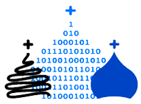

Пример заголовка
Пример заголовка
Пожертвовать

Главная
О фонде
Текущие проекты
Церковь Вознесения Христова
Церковь Спаса Преображения
Казанская церковь(Нижегородская обл.)
Церковь Благовещения Пресвятой Богородицы
Колокольня
Карповская Преображенская церковь
Церковь Воскресения Христова на Дебре
Церковь Спаса Нерукотворного образа
Церковь Николая Чудотворца
Церковь Владимирской иконы Божией Матери
Церковь Вознесения Господня
Казанская церковь(Ярославская обл.)
Церковь Петра Митрополита
Благовещенский Ионо-Яшезерский мужской монастырь
Ансамбль Кижского погоста
Церковь Казанской иконы Божией Матери
Церковь Воскресения Христова
Проекты из архивов партнеров
Реализованные проекты
Команда
Партнёры фонда
Статьи
Новости
Контакты
Главная
О фонде
Текущие проекты
Церковь Вознесения Христова
Церковь Спаса Преображения
Казанская церковь(Нижегородская обл.)
Церковь Благовещения Пресвятой Богородицы
Колокольня
Карповская Преображенская церковь
Церковь Воскресения Христова на Дебре
Церковь Спаса Нерукотворного образа
Церковь Николая Чудотворца
Церковь Владимирской иконы Божией Матери
Церковь Вознесения Господня
Казанская церковь(Ярославская обл.)
Церковь Петра Митрополита
Благовещенский Ионо-Яшезерский мужской монастырь
Ансамбль Кижского погоста
Церковь Казанской иконы Божией Матери
Церковь Воскресения Христова
Проекты из архивов партнеров
Реализованные проекты
Команда
Партнёры фонда
Статьи
Новости
Контакты
Официальные документы
Финансовые отчеты
Заявка на попечение
Инфо-стойки фонда
Запись на экскурсии
+79099812128
help@templerevival.com
121069, г. Москва, Мерзляковский переулок, дом 20, строение 1, офис 27
О фонде
Заявка на попечение
Отчеты
Документы
Финансовый отчет за 2020
Скачать
Финансовый отчет за 2021
Скачать